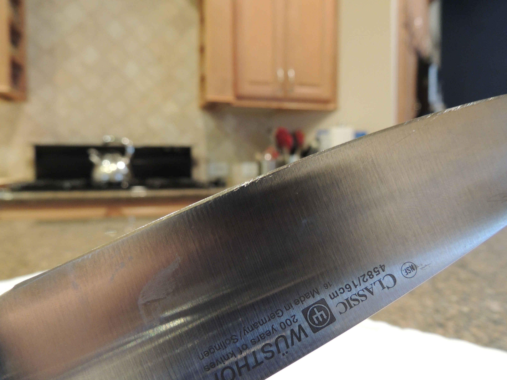
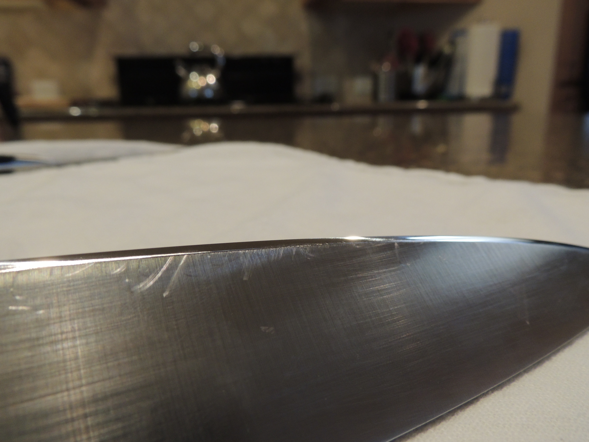
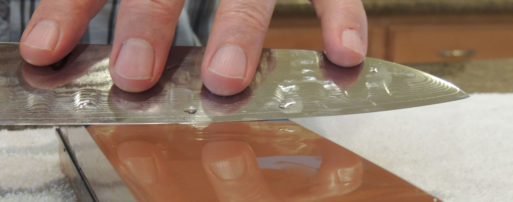
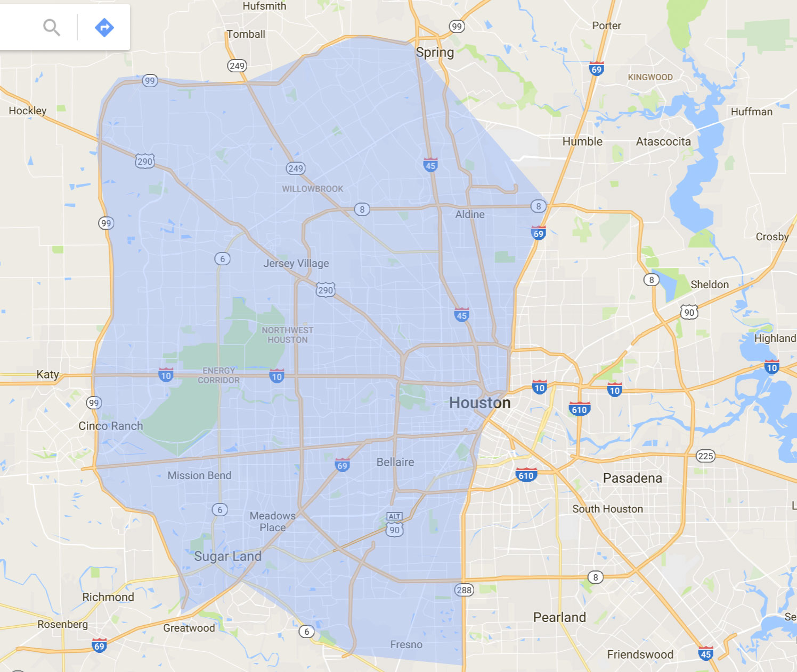

Greetings! My name is Andrew and I'm here to sharpen your kitchen knives. Located in Houston, TX, I offer superb knife sharpening at a reasonable price. While most stores that offer knife sharpening use automated machines, I do all my sharpening by hand using high quality Japanese water stones. This is by far the best method to give a knife a sharp, polished edge which cuts better and lasts longer.
When a knife is dull, it not only makes all your cutting and chopping work in the kitchen more difficult and time consuming, it's also more dangerous than using a sharp knife. Using a dull knife means you have to strain and push harder to make a cut, raising the risk for cutting yourself, whereas when your knife is sharp it will glide through food objects with less exertion, lowering the risk for an injury. Using a properly sharpened knife is also a great pleasure as it is much more comfortable to work with.
Sharp vs Dull Knife
Dull Knife - Scratched Edge

Sharp Knife - Polished Edge

Cutting With a Dull Knife vs a Sharp Knife
What Does Sharpening With a Whetstone Look Like?

Services
At this time I am only offering sharpening services for kitchen knives. They can be any size or style. The time required to sharpen a knife depends on the size of the blade and how dull the blade is. For an eight inch (8") blade that is very dull, it takes about 45 minutes to create a new sharp and polished edge. A blade of the same size that isn't overly dull can be sharpened in around 25 minutes.
How sharp a knife can be depends on the quality of the blade, which itself depends on factors like the quality of the metal, hardness of the metal, how the blade was made and what the original angle of the edge is. When properly sharpened and maintained, even a budget chef knife can take a very sharp edge and stay sharp for a good amount of time.
Please either call or email to arrange a knife sharpening service:
If you drop off and pickup your knives where I am located in Jersey Village, I charge a flat fee per knife, as indicated below. Unless you have a mountainous collection of kitchen knives you want sharpened (more than five), I can generally offer same day service.
In-Home Service
If it's preferred, I can also come to your location. All I require is access to a sink and a flat counter that can get slightly wet. The kitchen sink is an ideal location. I bring everything else I need. There is an additional fee for in-home service.
In-home service is available if you are located West of the 69 or 288 and East of the 99. This map indicates roughly the area I can travel to:

Pricing
6" Blade or Smaller: $10
7" Blade or Larger: $15
In-Home Service Fee: $5 per knife (Minimum two knives)
Andrew Roberts samusharpening@gmail.com 415-818-5818